Capítulo 4 Visualização com ggplot2
Busque mais informações sobre os pacotes tidyverse e ggplot2 nas referências recomendadas.
4.2 Componentes de um gráfico ggplot2
4.2.1 Geometrias e mapeamentos estéticos (mappings)
- Observe o gráfico abaixo, obtido de https://www.gapminder.org/downloads/updated-gapminder-world-poster-2015/.

O gráfico mostra como, em cada país, a saúde (mais precisamente, a expectativa de vida) se relaciona com a riqueza (mais precisamente, o PIB per capita).
Além da expectativa de vida e o do PIB per capita, o gráfico traz mais informações sobre cada país.
Cada país é representado por um ponto (a geometria).
-
Informações sobre cada país são representadas por características do ponto correspondente (as estéticas):
Variável Geometria Estética PIB per capita ponto posição x Expectativa de vida ponto posição y População ponto tamanho Continente ponto cor -
Você pode usar outras estéticas para representar informações:
- Cor de preenchimento.
- Cor do traço.
- Tipo do traço (sólido, pontilhado, tracejado etc.).
- Forma (círculo, quadrado, triângulo etc.).
- Opacidade.
- etc.
-
Você pode usar outras geometrias:
- Linhas.
- Barras ou colunas.
- Caixas.
- etc.
4.2.2 Escalas (scales)
As escalas controlam os detalhes da aparência da geometria e do mapeamento (eixos, cores etc.).
Os eixos do gráfico acima são escalas contínuas, com valores reais.
Observe o eixo horizontal. Os valores não aumentam linearmente, mas sim exponencialmente: cada passo à direita equivale a dobrar o valor do PIB. O eixo horizontal segue uma escala logarítmica.
Os tamanhos dos pontos formam uma escala discreta, com \(4\) valores possíveis (veja a legenda no canto inferior direito do gráfico).
As cores também formam uma escala discreta.
4.2.3 Rótulos (labels)
O gráfico também representa informação na forma de texto.
Além de rótulos (por exemplo, o texto que identifica cada eixo), o texto também pode, ele mesmo, ser uma geometria, com suas próprias estéticas: observe como o nome de cada país é escrito em um tamanho proporcional à sua população.
4.2.4 Outros componentes
-
Coordenadas:
Este gráfico usa coordenadas cartesianas, com eixos \(x\) e \(y\).
Existem gráficos que usam um sistema de coordenadas polares.
-
Temas:
Incluem todos os elementos “decorativos”: cor de fundo, linhas de grade, etc. Ajudam a facilitar a leitura e a interpretação.
No gráfico acima, um detalhe interessante do tema é a divisão de cada eixo em segmentos claros e segmentos escuros.
Legendas (guides).
-
Facetas:
Às vezes, um gráfico é composto por múltiplos subgráficos.
Cada subgráfico é uma faceta.
Facetas evitam que informações demais sejam apresentadas no mesmo lugar.
4.3 Conjunto de dados
Nossos exemplos de gráficos vão usar dados sobre o sono de diversos mamíferos.
O conjunto de dados se chama
msleepe está incluído no pacoteggplot2.-
Para ver a documentação, digite
-
Vamos atribuir o conjunto de dados à variável
df:df <- msleep df -
Vamos examinar a estrutura — usando R base:
str(df)## tibble [83 × 11] (S3: tbl_df/tbl/data.frame) ## $ name : chr [1:83] "Cheetah" "Owl monkey" "Mountain beaver" ... ## $ genus : chr [1:83] "Acinonyx" "Aotus" "Aplodontia" ... ## $ vore : chr [1:83] "carni" "omni" "herbi" ... ## $ order : chr [1:83] "Carnivora" "Primates" "Rodentia" ... ## $ conservation: chr [1:83] "lc" NA "nt" ... ## $ sleep_total : num [1:83] 12,1 17 14,4 14,9 4 14,4 8,7 7 ... ## $ sleep_rem : num [1:83] NA 1,8 2,4 2,3 0,7 2,2 1,4 NA ... ## $ sleep_cycle : num [1:83] NA NA NA 0,133 ... ## $ awake : num [1:83] 11,9 7 9,6 9,1 20 9,6 15,3 17 ... ## $ brainwt : num [1:83] NA 0,0155 NA 0,00029 0,423 NA NA NA ... ## $ bodywt : num [1:83] 50 0,48 1,35 0,019 ... -
Podemos usar
glimpse, uma função dotidyverse:glimpse(df)## Rows: 83 ## Columns: 11 ## $ name <chr> "Cheetah", "Owl monkey", "Mountain beaver", "Greater short-tai… ## $ genus <chr> "Acinonyx", "Aotus", "Aplodontia", "Blarina", "Bos", "Bradypus… ## $ vore <chr> "carni", "omni", "herbi", "omni", "herbi", "herbi", "carni", N… ## $ order <chr> "Carnivora", "Primates", "Rodentia", "Soricomorpha", "Artiodac… ## $ conservation <chr> "lc", NA, "nt", "lc", "domesticated", NA, "vu", NA, "domestica… ## $ sleep_total <dbl> 12,1, 17,0, 14,4, 14,9, 4,0, 14,4, 8,7, 7,0, 10,1, 3,0, 5,3, 9… ## $ sleep_rem <dbl> NA, 1,8, 2,4, 2,3, 0,7, 2,2, 1,4, NA, 2,9, NA, 0,6, 0,8, 0,7, … ## $ sleep_cycle <dbl> NA, NA, NA, 0,1333333, 0,6666667, 0,7666667, 0,3833333, NA, 0,… ## $ awake <dbl> 11,9, 7,0, 9,6, 9,1, 20,0, 9,6, 15,3, 17,0, 13,9, 21,0, 18,7, … ## $ brainwt <dbl> NA, 0,01550, NA, 0,00029, 0,42300, NA, NA, NA, 0,07000, 0,0982… ## $ bodywt <dbl> 50,000, 0,480, 1,350, 0,019, 600,000, 3,850, 20,490, 0,045, 14… -
Para examinar só as primeiras linhas do data frame:
head(df) -
Para examinar o data frame interativamente:
view(df) -
Podemos produzir um sumário dos dados usando o pacote summarytools (que já foi carregado neste documento):
Variável Estatísticas / Valores Freqs (% de Válidos) Grafo Faltante name
[character]1. African elephant
2. African giant pouched rat
3. African striped mouse
4. Arctic fox
5. Arctic ground squirrel
6. Asian elephant
7. Baboon
8. Big brown bat
9. Bottle-nosed dolphin
10. Brazilian tapir
[ 73 outros ]1 ( 1,2%)
1 ( 1,2%)
1 ( 1,2%)
1 ( 1,2%)
1 ( 1,2%)
1 ( 1,2%)
1 ( 1,2%)
1 ( 1,2%)
1 ( 1,2%)
1 ( 1,2%)
73 (88,0%)
0
(0,0%)genus
[character]1. Panthera
2. Spermophilus
3. Equus
4. Vulpes
5. Acinonyx
6. Aotus
7. Aplodontia
8. Blarina
9. Bos
10. Bradypus
[ 67 outros ]3 ( 3,6%)
3 ( 3,6%)
2 ( 2,4%)
2 ( 2,4%)
1 ( 1,2%)
1 ( 1,2%)
1 ( 1,2%)
1 ( 1,2%)
1 ( 1,2%)
1 ( 1,2%)
67 (80,7%)
0
(0,0%)vore
[character]1. carni
2. herbi
3. insecti
4. omni19 (25,0%)
32 (42,1%)
5 ( 6,6%)
20 (26,3%)
7
(8,4%)order
[character]1. Rodentia
2. Carnivora
3. Primates
4. Artiodactyla
5. Soricomorpha
6. Cetacea
7. Hyracoidea
8. Perissodactyla
9. Chiroptera
10. Cingulata
[ 9 outros ]22 (26,5%)
12 (14,5%)
12 (14,5%)
6 ( 7,2%)
5 ( 6,0%)
3 ( 3,6%)
3 ( 3,6%)
3 ( 3,6%)
2 ( 2,4%)
2 ( 2,4%)
13 (15,7%)
0
(0,0%)conservation
[character]1. cd
2. domesticated
3. en
4. lc
5. nt
6. vu2 ( 3,7%)
10 (18,5%)
4 ( 7,4%)
27 (50,0%)
4 ( 7,4%)
7 (13,0%)
29
(34,9%)sleep_total
[numeric]Média (dp) : 10,4 (4,5)
mín < mediana < máx:
1,9 < 10,1 < 19,9
IQE (CV) : 5,9 (0,4)65 valores distintos 
0
(0,0%)sleep_rem
[numeric]Média (dp) : 1,9 (1,3)
mín < mediana < máx:
0,1 < 1,5 < 6,6
IQE (CV) : 1,5 (0,7)32 valores distintos 
22
(26,5%)sleep_cycle
[numeric]Média (dp) : 0,4 (0,4)
mín < mediana < máx:
0,1 < 0,3 < 1,5
IQE (CV) : 0,4 (0,8)22 valores distintos 
51
(61,4%)awake
[numeric]Média (dp) : 13,6 (4,5)
mín < mediana < máx:
4,1 < 13,9 < 22,1
IQE (CV) : 5,9 (0,3)65 valores distintos 
0
(0,0%)brainwt
[numeric]Média (dp) : 0,3 (1)
mín < mediana < máx:
0 < 0 < 5,7
IQE (CV) : 0,1 (3,5)53 valores distintos 
27
(32,5%)bodywt
[numeric]Média (dp) : 166,1 (786,8)
mín < mediana < máx:
0 < 1,7 < 6654
IQE (CV) : 41,6 (4,7)82 valores distintos 
0
(0,0%) -
Vemos que há muitos
NAem diversas variáveis. Para nossos exemplos simples de visualização, vamos usar as colunasnamegenusordersleep_totalawakebodywtbrainwt
-
Mas… a coluna que mostra a dieta (
vore) tem só 7NA. Quais são? OK. Vamos manter a coluna
voretambém, apesar dosNA. Quando formos usar esta variável, tomaremos cuidado.-
Também… a coluna
bodywttem 0 como valor mínimo. Como assim? Ah, sem problema. A função
dfSummaryarredondou estes pesos para 0. Os valores de verdade ainda estão na tibble.-
Vamos criar uma tibble nova, só com as colunas que nos interessam:
-
Vamos ver o sumário:
Variável Estatísticas / Valores Freqs (% de Válidos) Grafo Faltante name
[character]1. African elephant
2. African giant pouched rat
3. African striped mouse
4. Arctic fox
5. Arctic ground squirrel
6. Asian elephant
7. Baboon
8. Big brown bat
9. Bottle-nosed dolphin
10. Brazilian tapir
[ 73 outros ]1 ( 1,2%)
1 ( 1,2%)
1 ( 1,2%)
1 ( 1,2%)
1 ( 1,2%)
1 ( 1,2%)
1 ( 1,2%)
1 ( 1,2%)
1 ( 1,2%)
1 ( 1,2%)
73 (88,0%)
0
(0,0%)order
[character]1. Rodentia
2. Carnivora
3. Primates
4. Artiodactyla
5. Soricomorpha
6. Cetacea
7. Hyracoidea
8. Perissodactyla
9. Chiroptera
10. Cingulata
[ 9 outros ]22 (26,5%)
12 (14,5%)
12 (14,5%)
6 ( 7,2%)
5 ( 6,0%)
3 ( 3,6%)
3 ( 3,6%)
3 ( 3,6%)
2 ( 2,4%)
2 ( 2,4%)
13 (15,7%)
0
(0,0%)genus
[character]1. Panthera
2. Spermophilus
3. Equus
4. Vulpes
5. Acinonyx
6. Aotus
7. Aplodontia
8. Blarina
9. Bos
10. Bradypus
[ 67 outros ]3 ( 3,6%)
3 ( 3,6%)
2 ( 2,4%)
2 ( 2,4%)
1 ( 1,2%)
1 ( 1,2%)
1 ( 1,2%)
1 ( 1,2%)
1 ( 1,2%)
1 ( 1,2%)
67 (80,7%)
0
(0,0%)vore
[character]1. carni
2. herbi
3. insecti
4. omni19 (25,0%)
32 (42,1%)
5 ( 6,6%)
20 (26,3%)
7
(8,4%)bodywt
[numeric]Média (dp) : 166,1 (786,8)
mín < mediana < máx:
0 < 1,7 < 6654
IQE (CV) : 41,6 (4,7)82 valores distintos 
0
(0,0%)brainwt
[numeric]Média (dp) : 0,3 (1)
mín < mediana < máx:
0 < 0 < 5,7
IQE (CV) : 0,1 (3,5)53 valores distintos 
27
(32,5%)awake
[numeric]Média (dp) : 13,6 (4,5)
mín < mediana < máx:
4,1 < 13,9 < 22,1
IQE (CV) : 5,9 (0,3)65 valores distintos 
0
(0,0%)sleep_total
[numeric]Média (dp) : 10,4 (4,5)
mín < mediana < máx:
1,9 < 10,1 < 19,9
IQE (CV) : 5,9 (0,4)65 valores distintos 
0
(0,0%)
4.4 Gráficos de dispersão (scatter plots)
Servem para visualizar a relação entre duas variáveis quantitativas.
Essa relação não é necessariamente de causa e efeito.
Isto é, a variável do eixo horizontal não determina, necessariamente, os valores da variável do eixo vertical.
Pense em associação, correlação, não em causalidade.
Troque as variáveis de eixo, se ajudar a deixar isto claro.
4.4.1 Horas de sono e peso corporal
-
Como as variáveis
sleep_totalebodywtestão relacionadas?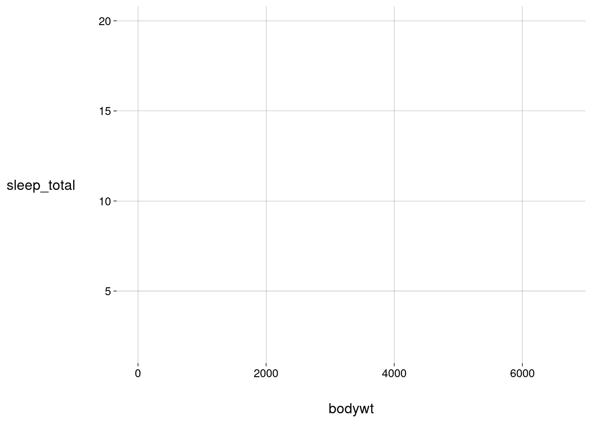 O que houve? Cadê os pontos?
-
O problema foi que só especificamos o mapeamento estético (com
aes, que são as iniciais de aesthetics). Faltou a geometria.sono %>% ggplot(aes(x = bodywt, y = sleep_total)) + geom_point()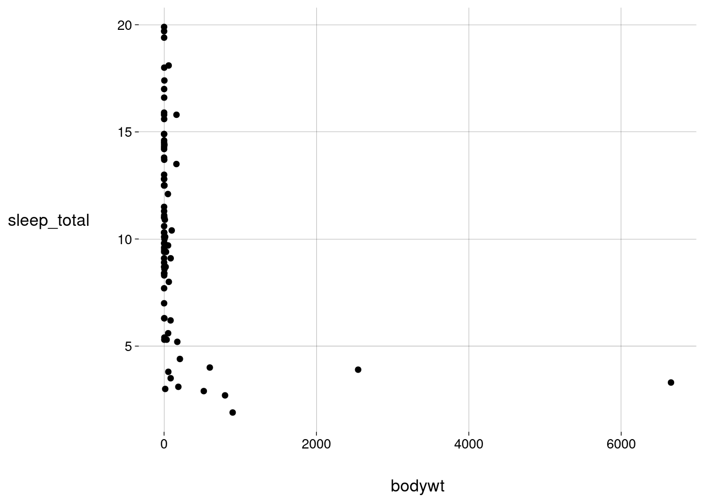 Que horror.
A única coisa que percebemos aqui é que os mamíferos muito pesados dormem menos de \(5\) horas por noite.
Estes animais muito pesados estão estragando a escala do eixo \(x\).
-
Que animais são estes?
Além disso, há muitos pontos sobrepostos. Em bom português, temos um problema de overplotting.
Existem diversas maneiras de lidar com isso.
-
A primeira delas é alterando a opacidade dos pontos. Isto é um ajuste na geometria apenas, pois a opacidade, aqui, não representa informação nenhuma.
sono %>% ggplot(aes(x = bodywt, y = sleep_total)) + geom_point(alpha = 0.2)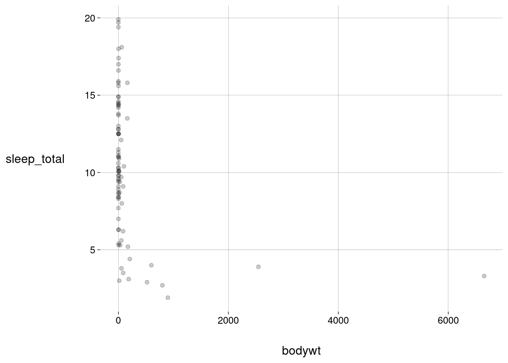 -
Outra maneira é usar
geom_jitterem vez degeom_point. “Jitter” significa “tremer”. As posições dos pontos são ligeiramente perturbadas, para evitar colisões. Perdemos precisão, mas a visualização fica melhor.sono %>% ggplot(aes(x = bodywt, y = sleep_total)) + geom_jitter(width = 100)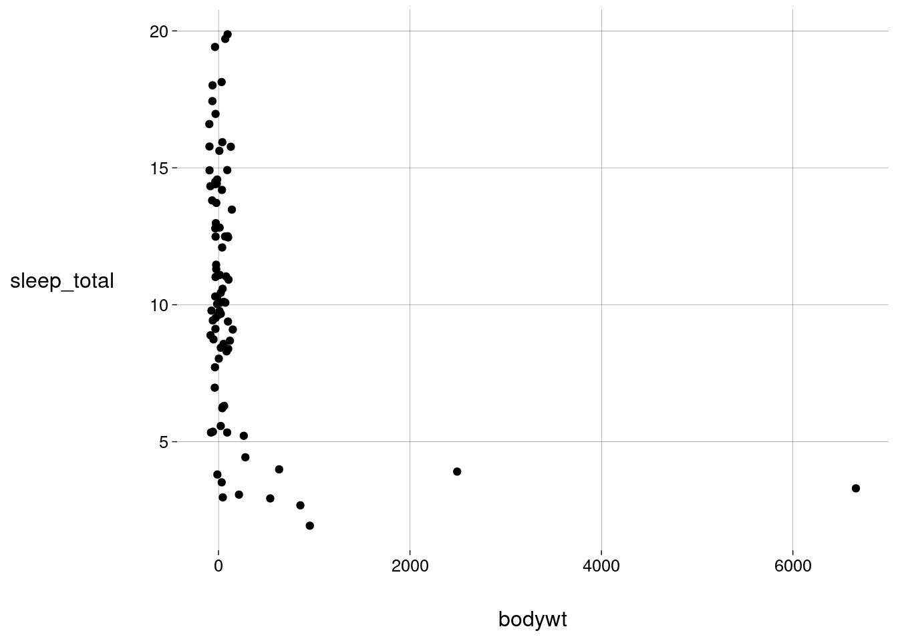 -
Vamos mudar os limites do gráfico para nos concentrarmos nos animais menos pesados. Observe que isto é um ajuste na escala.
sono %>% ggplot(aes(x = bodywt, y = sleep_total)) + geom_point() + scale_x_continuous(limits = c(0, 200))## Warning: Removed 7 rows containing missing values (`geom_point()`).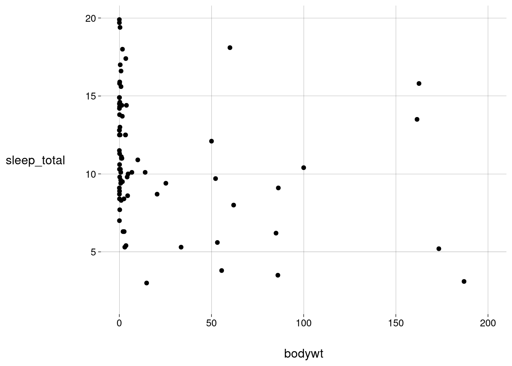 Nestes limites, a relação entre horas de sono e peso não é mais tão pronunciada.
4.4.2 Horas de sono e peso corporal para animais pequenos
-
Vamos restringir o gráfico a animais com no máximo \(5\)kg.
limite <- 5 -
Em vez de mudar a escala do gráfico, vamos filtrar as linhas do data frame:
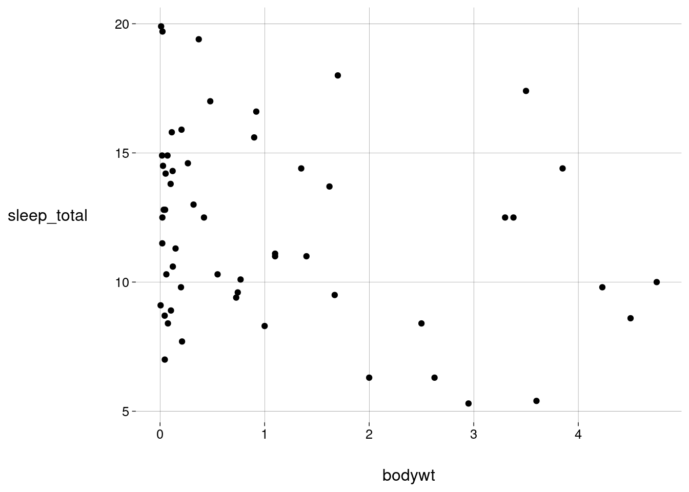
4.4.5 Aparência fixa ou dependendo de variável?
Se for fixa, não é estética. Não representa informação.
Se depender de variável, é estética. Representa informação.
-
Compare o último chunk acima com:
sono %>% filter(bodywt < limite) %>% ggplot() + geom_point(aes(x = bodywt, y = sleep_total), color = 'blue')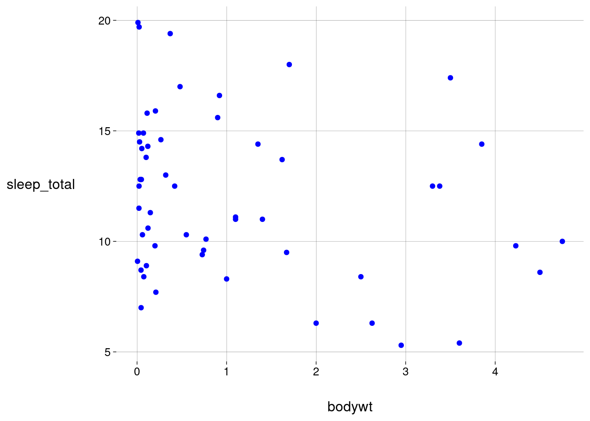 -
Se for uma estética, precisa estar associada a uma variável, não a um valor fixo. Um erro comum seria fazer:
sono %>% filter(bodywt < limite) %>% ggplot() + geom_point(aes(x = bodywt, y = sleep_total, color = 'blue'))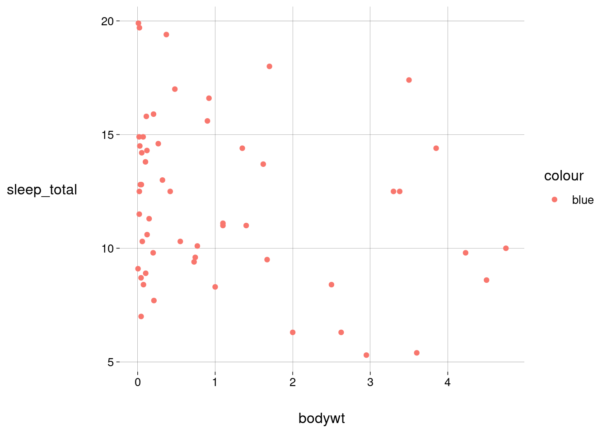
4.4.6 Uma correlação mais clara
-
Peso cerebral versus peso corporal:
sono %>% ggplot(aes(x = bodywt, y = brainwt)) + geom_point()## Warning: Removed 27 rows containing missing values (`geom_point()`).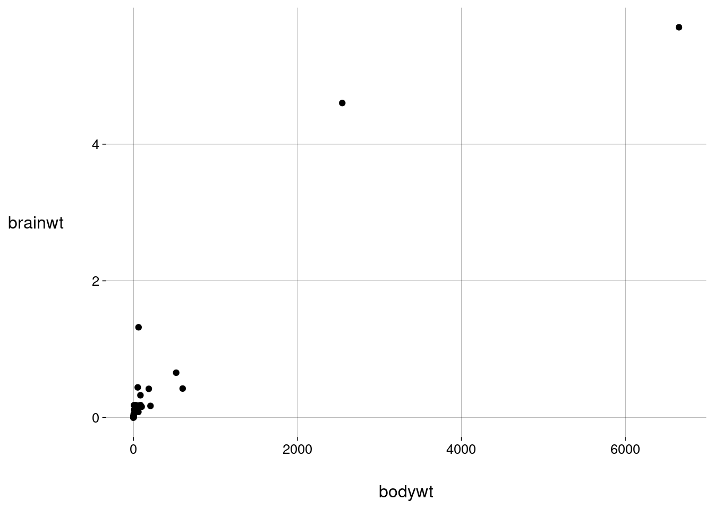 -
A mensagem de aviso (warning) diz que há \(27\) valores faltantes (
NA) embodywtoubrainwt. De fato: -
Vamos restringir aos animais mais leves e mudar a opacidade:
## Warning: Removed 18 rows containing missing values (`geom_point()`).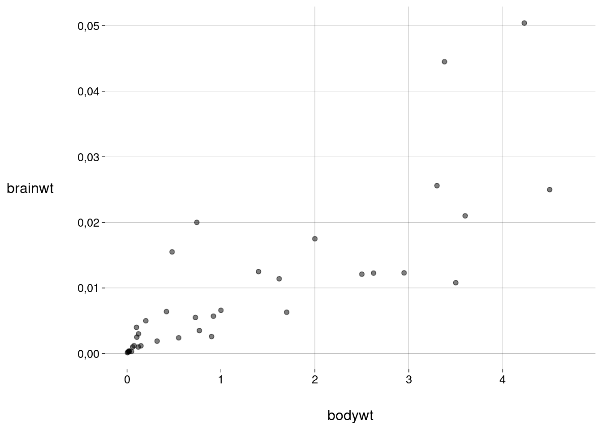 -
Vamos incluir horas de sono e dieta. Observe as estéticas usadas.
sono %>% filter(bodywt < limite) %>% ggplot( aes( x = bodywt, y = brainwt, size = sleep_total, color = vore ) ) + geom_point(alpha = .5)## Warning: Removed 18 rows containing missing values (`geom_point()`).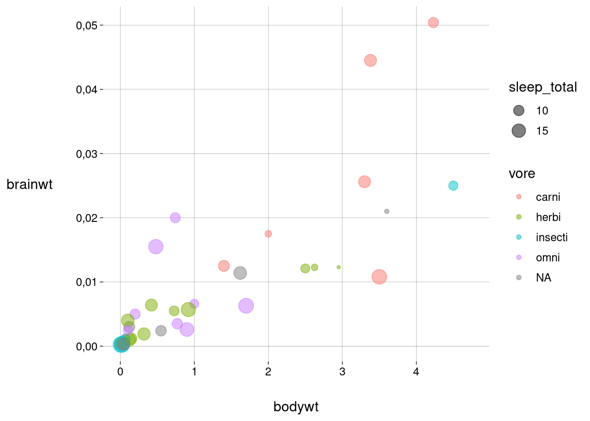 -
Vamos mudar a escala dos tamanhos e incluir rótulos:
grafico <- sono %>% filter(bodywt < limite) %>% ggplot( aes( x = bodywt, y = brainwt, size = sleep_total, color = vore ) ) + geom_point(alpha = .5) + scale_size( breaks = seq(0, 24, 4) ) + labs( title = 'Peso do cérebro versus peso corporal', subtitle = paste0( 'para mamíferos com menos de ', limite, ' kg' ), caption = 'Fonte: dataset `msleep`', x = 'Peso corporal (kg)', y = 'Peso do\n cérebro (kg)', color = 'Dieta', size = 'Horas\nde sono' ) grafico## Warning: Removed 18 rows containing missing values (`geom_point()`).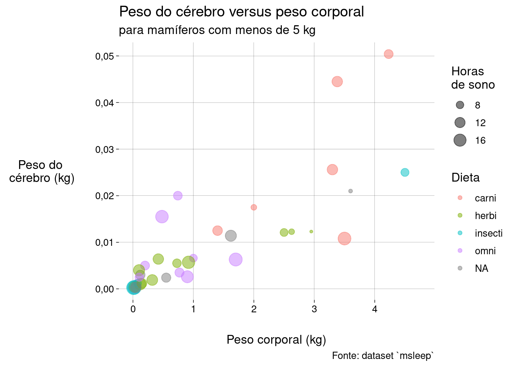 -
Vamos mudar as cores usadas para a dieta, usando uma escala diferente.
grafico2 <- grafico + scale_color_discrete( palette = 'RdBu', na.value = 'black', type = scale_color_brewer ) grafico2## Warning: Removed 18 rows containing missing values (`geom_point()`).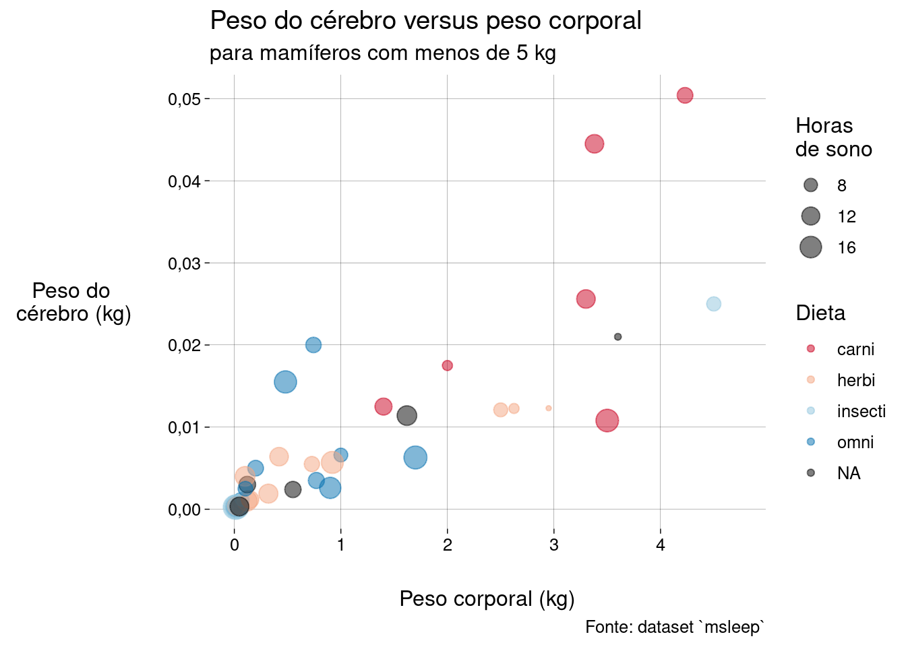 Observe como usamos o gráfico já salvo na variável
graficoe simplesmente acrescentamos a nova escala. Este tipo de “montagem” de gráficosggplot2é bem conveniente, para evitar repetição de código.-
Um último ajuste na aparência: os pontos na legenda “Dieta” estão pequenos demais. Quase não identificamos as cores deles.
Vamos usar a função
guidespara modificar (override) a estéticacolor— apenas na legenda, não nos pontos mostrados no gráfico, cujos tamanhos representam o número de horas de sono — tornando o tamanho maior. Leia mais sobreoverride.aesneste link (em inglês).grafico3 <- grafico2 + guides(color = guide_legend(override.aes = list(size = 10))) grafico3## Warning: Removed 18 rows containing missing values (`geom_point()`).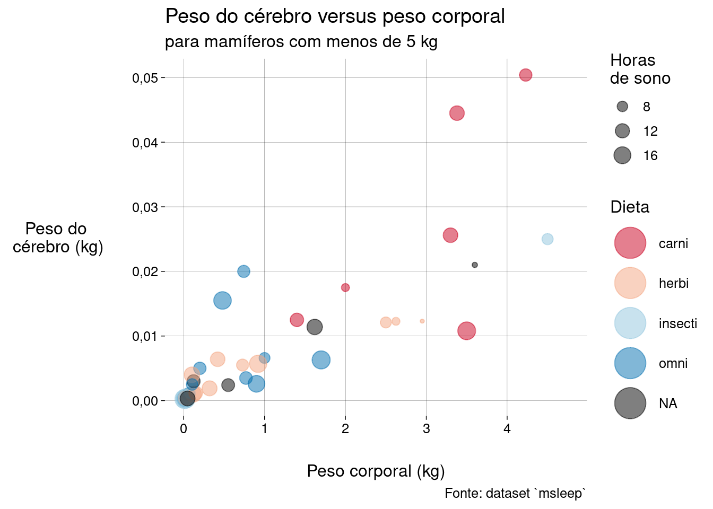 -
Agora podemos finalmente comentar sobre a informação que o gráfico mostra sobre os dados:
De fato, existe uma correlação entre peso cerebral e peso corporal: quanto maior o peso corporal, maior o peso cerebral. Nada surprenndente.
-
Podemos fazer o
ggplot2traçar uma reta de regressão com a geometriageom_smooth. Vamos falar mais sobre correlação em um capítulo futuro.grafico4 <- grafico3 + geom_smooth( aes(group = 1), show.legend = FALSE, method = 'lm', se = FALSE, linewidth = 1 ) grafico4## `geom_smooth()` using formula = 'y ~ x'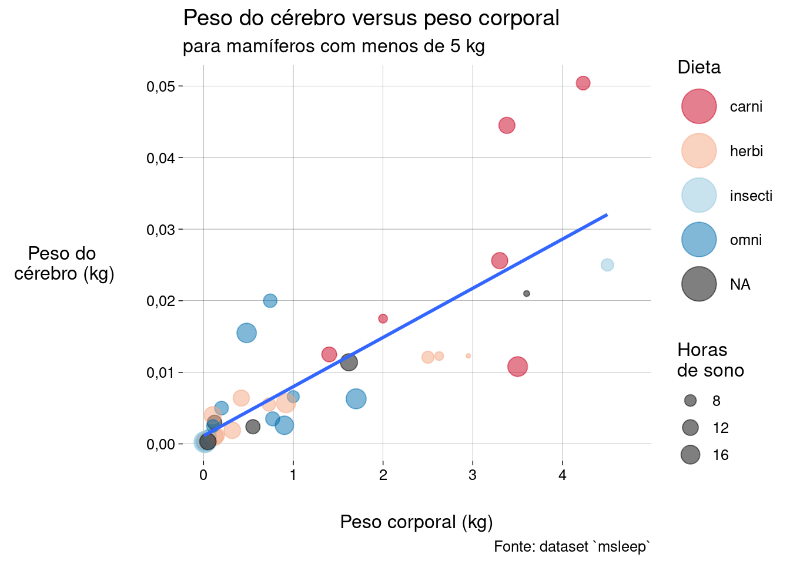 Todos os carnívoros têm peso corporal maior que \(1\)kg e peso cerebral maior ou igual a \(10\)g.
Só um carnívoro dorme \(8\) horas ou menos. Qual?
Todos os insetívoros — com exceção de um (qual?) — são muito leves e dormem muito.
Todos os onívoros têm menos de \(2\)kg de peso corporal e \(20\)g ou menos de peso cerebral.
4.6 Histogramas e cia.
- A idéia agora é agrupar indivíduos em classes, dependendo do valor de uma variável quantitativa.
4.6.1 Distribuições de frequência
-
Vamos nos concentrar nas horas de sono.
sono$sleep_total## [1] 12,1 17,0 14,4 14,9 4,0 14,4 8,7 7,0 10,1 3,0 5,3 9,4 10,0 12,5 10,3 8,3 ## [17] 9,1 17,4 5,3 18,0 3,9 19,7 2,9 3,1 10,1 10,9 14,9 12,5 9,8 1,9 2,7 6,2 ## [33] 6,3 8,0 9,5 3,3 19,4 10,1 14,2 14,3 12,8 12,5 19,9 14,6 11,0 7,7 14,5 8,4 ## [49] 3,8 9,7 15,8 10,4 13,5 9,4 10,3 11,0 11,5 13,7 3,5 5,6 11,1 18,1 5,4 13,0 ## [65] 8,7 9,6 8,4 11,3 10,6 16,6 13,8 15,9 12,8 9,1 8,6 15,8 4,4 15,6 8,9 5,2 ## [81] 6,3 12,5 9,8 Antes de montar o histograma, vamos construir uma distribuição de frequência.
-
A amplitude é a diferença entre o valor máximo e o valor mínimo. A função
rangenão retorna a amplitude, mas sim os valores mínimo e máximo:## [1] 1,9 19,9 -
Vamos decidir que cada classe vai ter \(2\) horas. A função
cutsubstitui os valores do vetor pelos nomes das classes:## [1] [12,14) [16,18) [14,16) [14,16) [4,6) [14,16) [8,10) [6,8) [10,12) [2,4) ## [11] [4,6) [8,10) [10,12) [12,14) [10,12) [8,10) [8,10) [16,18) [4,6) [18,20) ## [21] [2,4) [18,20) [2,4) [2,4) [10,12) [10,12) [14,16) [12,14) [8,10) [0,2) ## [31] [2,4) [6,8) [6,8) [8,10) [8,10) [2,4) [18,20) [10,12) [14,16) [14,16) ## [41] [12,14) [12,14) [18,20) [14,16) [10,12) [6,8) [14,16) [8,10) [2,4) [8,10) ## [51] [14,16) [10,12) [12,14) [8,10) [10,12) [10,12) [10,12) [12,14) [2,4) [4,6) ## [61] [10,12) [18,20) [4,6) [12,14) [8,10) [8,10) [8,10) [10,12) [10,12) [16,18) ## [71] [12,14) [14,16) [12,14) [8,10) [8,10) [14,16) [4,6) [14,16) [8,10) [4,6) ## [81] [6,8) [12,14) [8,10) ## 10 Levels: [0,2) [2,4) [4,6) [6,8) [8,10) [10,12) [12,14) [14,16) ... [18,20) -
A função
tablefaz a contagem dos elementos de cada classe:sono$sleep_total %>% cut(breaks = seq(0, 20, 2), right = FALSE) %>% table(dnn = 'Horas de sono') %>% as.data.frame()
4.6.2 Histograma
Na verdade, o
ggplot2já faz esses cálculos para nós.-
O default é criar \(30\) classes (bins):
sono %>% ggplot(aes(x = sleep_total)) + geom_histogram()## `stat_bin()` using `bins = 30`. Pick better value with `binwidth`.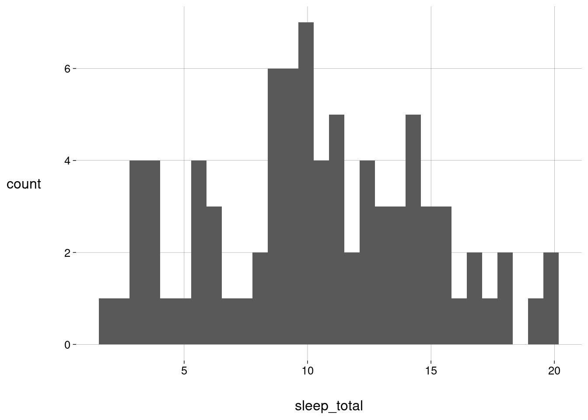 -
Vamos mudar isto passando um vetor de limites das classes (breaks). Vamos acrescentar rótulos também:
sono %>% ggplot(aes(x = sleep_total)) + geom_histogram(breaks = seq(0, 20, 2)) + scale_x_continuous(breaks = seq(0, 20, 2)) + labs( title = 'Horas de sono de diversos mamíferos', x = 'horas de sono', y = NULL, caption = 'Fonte: dataset `msleep`' )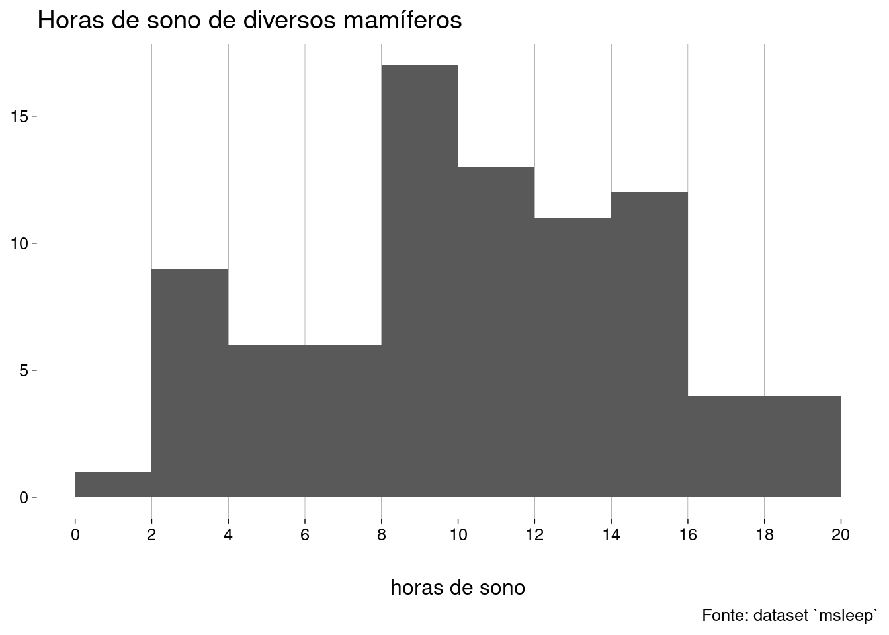 -
Nossas impressões:
A classe que mais tem elementos é a de \(8\) a \(10\) horas.
A distribuição é mais ou menos simétrica.
-
A distribuição tem forma aproximada de sino: há poucos mamíferos com valores extremos de horas de sono; a maioria está próxima do valor médio:
mean(sono$sleep_total)## [1] 10,43373
4.6.3 Polígono de frequência
Em vez das barras do histograma, podemos desenhar uma linha ligando seus topos.
-
O resultado é um polígono de frequência.
pf <- sono %>% ggplot(aes(x = sleep_total)) + geom_freqpoly(breaks = seq(0, 20, 2), color = 'red') + scale_x_continuous(breaks = seq(0, 20, 2)) pf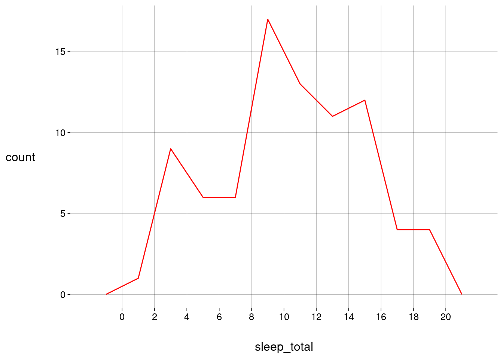 -
Vamos sobrepor o polígono de frequência ao histograma, para deixar claro o que está acontecendo:
pf + geom_histogram(breaks = seq(0, 20, 2), alpha = .3)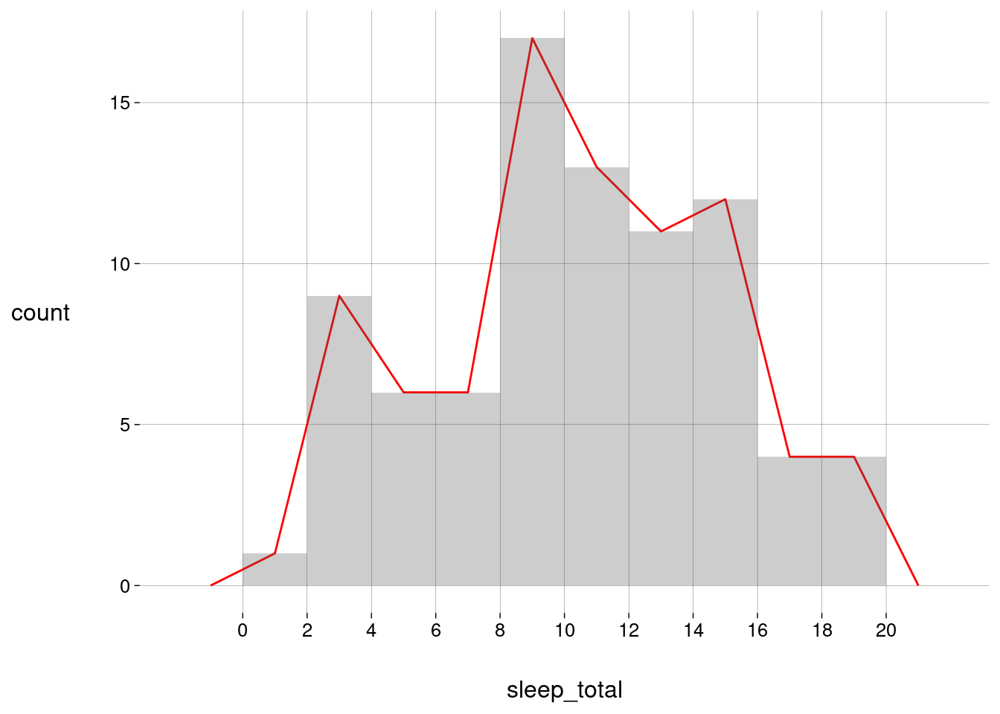
4.7 Ogiva
A ogiva é um gráfico que mostra a frequência acumulada: para cada valor \(v\) da variável no eixo \(x\), a proporção de indivíduos com valor menor ou igual a \(v\).
A geometria
geom_stepgera o gráfico de uma função degrau.-
Cada geometria está ligada a uma
stat, um algoritmo para computar o que vai ser desenhado. Aqui, passamos para a geometria a funçãoecdf(empirical cumulative distribution function), do pacotestats, que calcula as frequências acumuladas.sono %>% ggplot(aes(x = sleep_total)) + geom_step(stat = 'ecdf') + scale_x_continuous(breaks = seq(0, 20, 2)) + scale_y_continuous(breaks = seq(0, 1, .1)) + labs(y = NULL)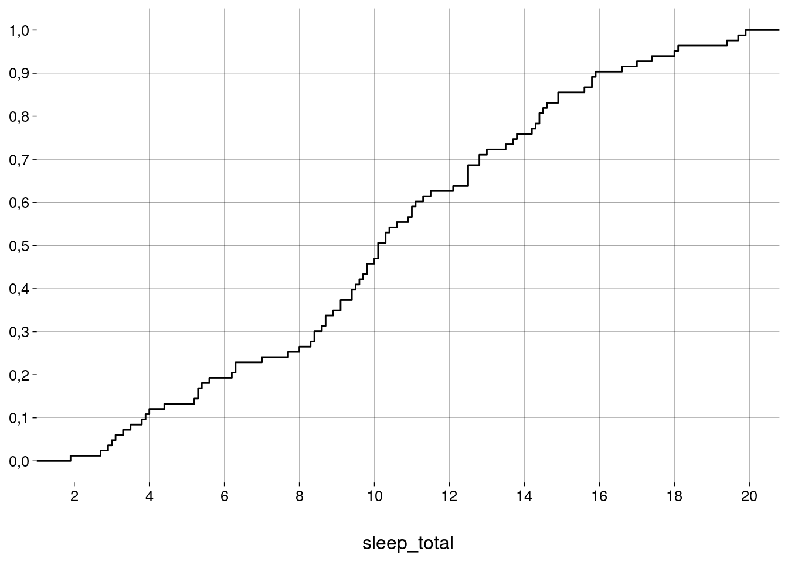 -
Com a ogiva, podemos obter informações difíceis de visualizar no histograma. Por exemplo:
Cerca de \(20\%\) dos mamíferos têm menos de \(6\) horas de sono.
Cerca de metade dos mamíferos têm menos de \(10\) horas de sono.
Cerca de \(10\%\) dos mamíferos têm mais de \(16\) horas de sono.
4.8 Ramos e folhas
No início dos anos \(1900\), quando estatísticas eram feitas à mão, Arthur Bowley criou os diagramas de ramos e folhas.
Um diagrama de ramos e folhas é, basicamente, uma listagem de todos os valores de uma variável, agrupados de maneira que todos os valores de uma classe (i.e., de uma linha) têm os algarismos iniciais dentro de um intervalo.
-
Para as horas de sono dos mamíferos:
## ## The decimal point is at the | ## ## 0 | 9 ## 2 | 79013589 ## 4 | 0423346 ## 6 | 23307 ## 8 | 03446779114456788 ## 10 | 01113346900135 ## 12 | 15555880578 ## 14 | 234456996889 ## 16 | 604 ## 18 | 01479 A primeira linha representa um indivíduo com \(0{,}9\) horas de sono.
-
A penúltima linha representa \(3\) valores:
- \(16{,}6\)
- \(17{,}0\)
- \(17{,}4\)
4.9 Personalização do tema
-
O
ggplot2tem um tema default, chamadotheme_gray, que gera o scatterplot de um exemplo anterior deste capítulo do seguinte modo:
-
Para este material, escolhi o tema
theme_linedraw, que usa linhas pretas sobre fundo branco: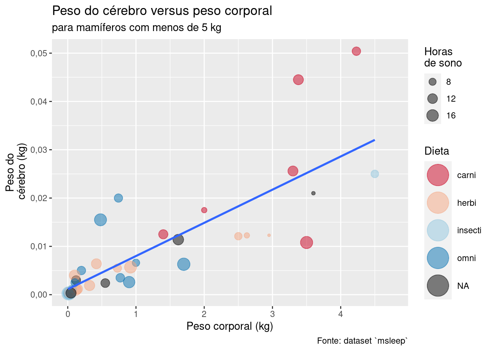 -
Para deixar os gráficos mais leves e facilitar a leitura, fiz as seguintes alterações no tema:
Mudei o tamanho do texto dos rótulos.
Fiz o rótulo do eixo \(y\) aparecer na horizontal; embora isto ocupe um pouco mais de espaço, evita que o leitor tenha que girar a cabeça para ler o rótulo.
Eliminei as linhas dos eixos, para o gráfico ficar mais leve.
Eliminei a moldura da área de dados, para o gráfico ficar mais leve.
Eliminei a grade secundária, para o gráfico ficar mais leve.
-
O resultado é
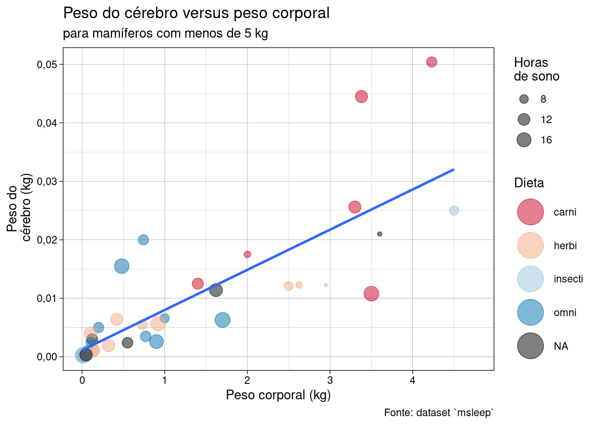 -
Os meus comandos para alterar o tema são
# Tamanho do texto depende do formato de saída (html ou pdf): plot_text_size = ifelse(is_html_output(), 12, 13) # Tema mais leve: theme_set( theme_linedraw() + theme( # Tamanho do texto text = element_text(size = plot_text_size), # Eixo y axis.title.y.left = element_text( # Nunca girar o rótulo do eixo y angle = 0, # Separar o rótulo do eixo um pouco margin = margin(r = 20), # Posicionar verticalmente no meio vjust = .5 ), # Eixo y secundário (à direita), quando presente axis.title.y.right = element_text( # Nunca girar o rótulo do eixo y angle = 0, # Separar o rótulo do eixo um pouco margin = margin(l = 20), # Posicionar verticalmente no meio vjust = .5 ), # Não colocar marcas no eixo y secundário axis.ticks.y.right = element_blank(), # Separar o eixo x do rótulo um pouco mais axis.title.x.bottom = element_text( margin = margin(t = 20) ), # Eliminar linhas dos eixos axis.line = element_blank(), # Eliminar a moldura da área de dados panel.border = element_blank(), # Eliminar a grade secundária panel.grid.minor = element_blank() ) )
4.10 Exercícios
Não se esqueça de incluir títulos nos gráficos e rótulos nos eixos.
4.10.1 Peso cerebral e peso corporal
Observe os comandos que geraram o gráfico
grafico4.O que acontece se você retirar
aes(group = 1)da chamada ageom_smooth? Explique.O que acontece se você mudar
show.legend = FALSEparashow.legend = TRUEna chamada ageom_smooth? Explique.O que acontece se você mudar
se = FALSEparase = TRUEna chamada ageom_smooth? Explique.Acrescente ao gráfico a camada
facet_wrap(~vore). O que acontece?Examine o data frame
sonoe identifique o único insetívoro com mais de \(4\)kg.Instale o pacote
gg_repele acrescente ao gráficografico4(não facetado) a geometriageom_label_repel(consulte a ajuda) para rotular o mamífero insetívoro identificado no item anterior com o seu nome, sem cobrir outros pontos do gráfico. Cuidado para não alterar a legenda que já existe.
4.10.2 Peso cerebral e horas de sono
Use o data frame sono definido como
Construa um histograma da variável
brainwt. Escolha o número de classes que você achar melhor. O que acontece com os valoresNA?Descubra que função da forma
scale_x_...usar para fazer com que o eixo \(x\) tenha uma escala logarítmica. Gere um novo histograma.Qual dos dois histogramas é melhor para responder a pergunta “Qual a faixa de peso cerebral que tem mais animais?” de forma satisfatória?
Construa um scatter plot de horas de sono versus peso do cérebro. Você percebe alguma correlação entre estas variáveis? Se precisar, concentre-se em um subconjunto dos dados.
Usando
geom_smooth(leia a respeito), sobreponha uma reta de regressão ao gráfico de dispersão, usando o métodolme sem o erro padrão (i.e., comse = FALSE). O que você observa? Discuta.
4.10.3 Igualdade de gênero entre furacões?
Este artigo tenta achar uma relação entre o gênero do nome de um furacão e a quantidade de vítimas fatais provocadas por ele.
Os dados estão no pacote DAAG, que deve ser instalado:
if (!require(DAAG))
install.packages("DAAG")Vamos usar apenas algumas das variáveis, com nomes em português.
-
Crie histogramas para as seguintes variáveis, escolhendo a quantidade de barras que você achar melhor.
velocidadeprejuizomortes
Não se esqueça de incluir títulos nos gráficos e rótulos nos eixos.
Comente os histogramas.
-
Os histogramas de prejuízos e mortes não ficaram bons. Vamos gerar histogramas transformados.
No data frame, crie duas novas colunas:
logprejuizo: logaritmo do prejuízo (na base \(10\))logmortes: logaritmo do número de mortes (na base \(10\))
Agora, gere histogramas destas duas novas variáveis.
O que significa o valor do logaritmo do prejuízo na base \(10\)?
O que significa o valor do logaritmo do número de mortes na base \(10\)?
Por que o histograma do logaritmo do número de mortes vem com uma mensagem de aviso?
Por que isto não acontece com o logaritmo do prejuízo?
Faça um gráfico de dispersão com
pressaono eixo \(y\) evelocidadeno eixo \(x\).Usando
geom_smooth(leia a respeito), sobreponha uma reta de regressão ao gráfico, usando o métodolme sem o erro padrão (i.e., comse = FALSE). O que você observa? Discuta.Faça um gráfico de dispersão com
logmortesno eixo \(y\) epressaono eixo \(x\).Usando
geom_smooth(leia a respeito), sobreponha uma reta de regressão ao gráfico, usando o métodolme sem o erro padrão (i.e., comse = FALSE). O que você observa? Discuta.Faça um gráfico de dispersão com
logmortesno eixo \(y\) epressaono eixo \(x\), com pontos coloridos de acordo com o gênero do nome do furacão.Usando
geom_smooth(leia a respeito), sobreponha retas de regressão ao gráfico, uma para cada gênero, usando o métodolme sem o erro padrão (i.e., comse = FALSE). O que você observa? Discuta.
Visualizações como esta ajudam a explorar os dados, mas não servem para testar rigorosamente a hipótese de que furacões mulheres matam mais do que furacões homens.
Mais adiante no curso, vamos aprender a fazer testes mais rigorosos sobre hipóteses como esta.